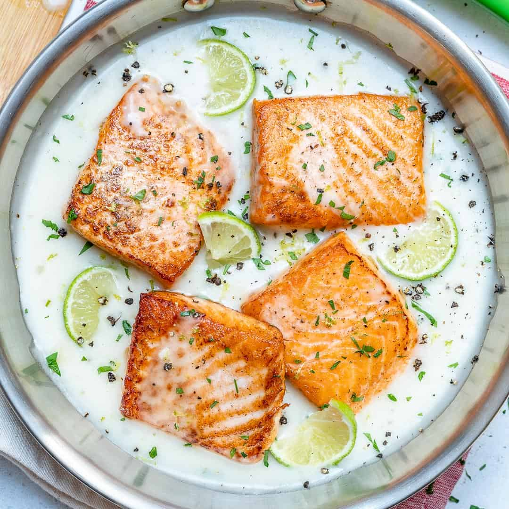

Coconut-Lime Salmon

Description
This is a very quick, easy low-carb recipe, rich and filling without being too heavy. Ginger, basil & lime juice serve to brighten everything up!
Ingredients
- 2 tbsp. coconut oil, divided
- 4 skinless salmon fillets
- 1 tsp. kosher salt, divided
- 1/2 a small onion, minced
- 2 cloves garlic, minced
- 1 1/2" piece ginger, grated
- 1 can Thai Kitchen coconut milk
- 1 tbsp. fresh lime juice, plus lime wedges for serving
- 2 tbsp. chopped fresh basil
- 1 Fresno chilli, seeded & chopped
Steps
- In a large cast-iron skillet, heat 1 tablespoon oil over medium-high heat.
- Season the salmon with ½ teaspoon salt.
- When oil is hot but not smoking, add salmon skin side up. Let sit undisturbed until golden and salmon easily releases from pan, about 4 minutes
- Use a thin metal spatula, flip salmon and cook until golden on the other side, about 2 minutes more.
- Remove to a plate
- Reduce heat to medium and add remaining tablespoon oil and onion to skillet. Cook, stirring occasionally, until softened, 2 minutes
- Add garlic and ginger and cook, stirring, until fragrant, 1 minute
- Stir in coconut milk and bring to a simmer
- Cook, stirring occasionally, until thickened, 5 minutes. Stir in lime juice and remaining ½ teaspoon salt
- Remove from heat and return salmon to pan. Garnish with basil and Fresno chili, and serve with lime wedges